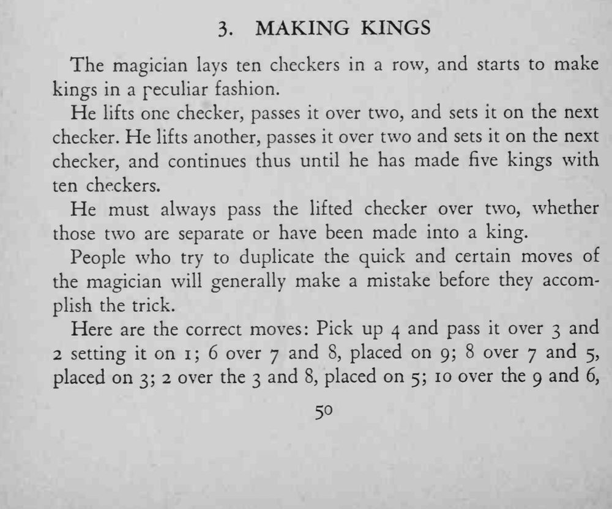
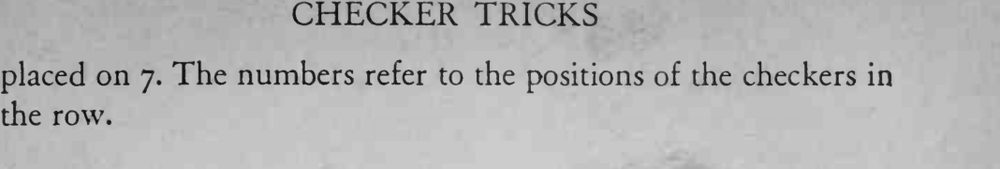

十枚棋子排成一行，魔术师一枚一枚拿起、越过两枚放下，最后十枚棋子变成了整整齐齐的五叠。
每一步都必须真的越过两枚，次序和编号一旦记错，后面就叠不成。


The magician lays ten checkers in a row, and starts to make kings in a peculiar fashion. He lifts one checker, passes it over two, and sets it on the next checker. He lifts another, passes it over two and sets it on the next checker, and continues thus until he has made five kings with ten checkers. He must always pass the lifted checker over two, whether those two are separate or have been made into a king. People who try to duplicate the quick and certain moves of the magician will generally make a mistake before they accomplish the trick. Here are the correct moves: Pick up 4 and pass it over 3 and 2 setting it on 1; 6 over 7 and 8, placed on 9; 8 over 7 and 5, placed on 3; 2 over the 3 and 8, placed on 5; 10 over the 9 and 6, placed on 7. The numbers refer to the positions of the checkers in the row.